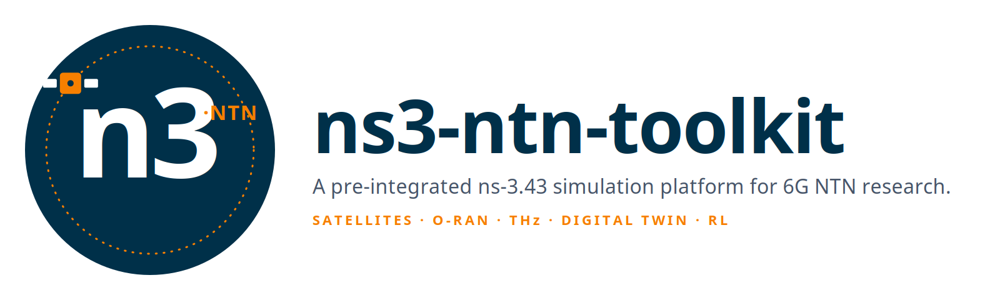
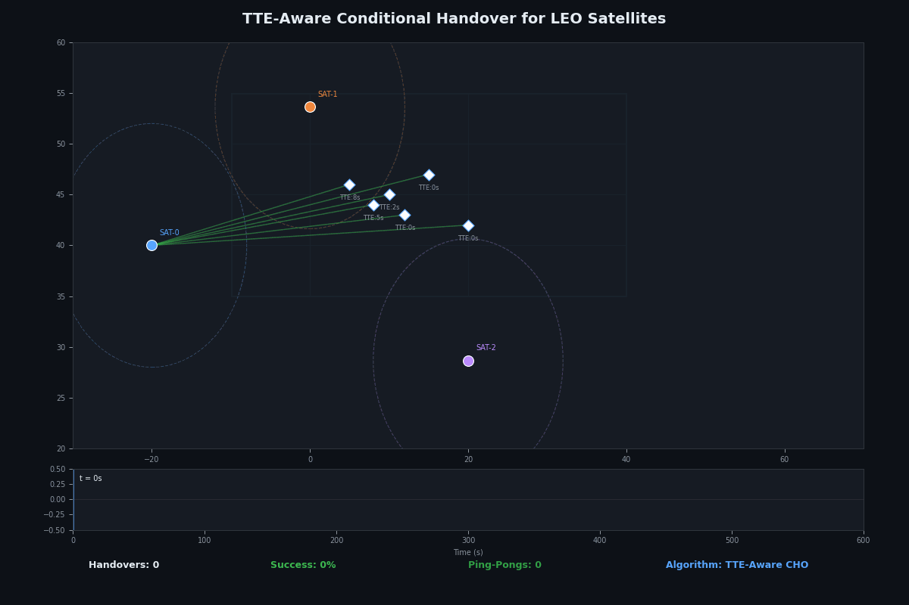
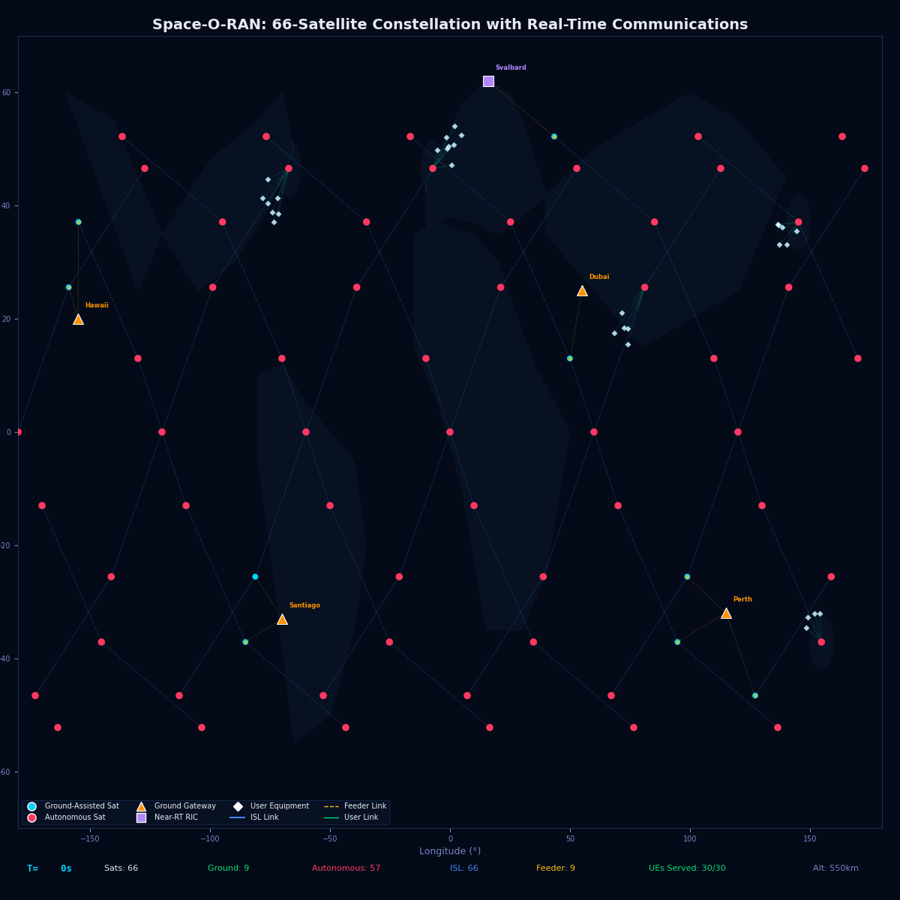
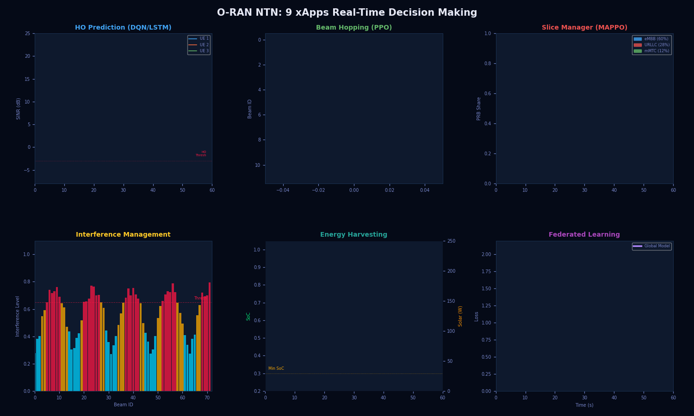
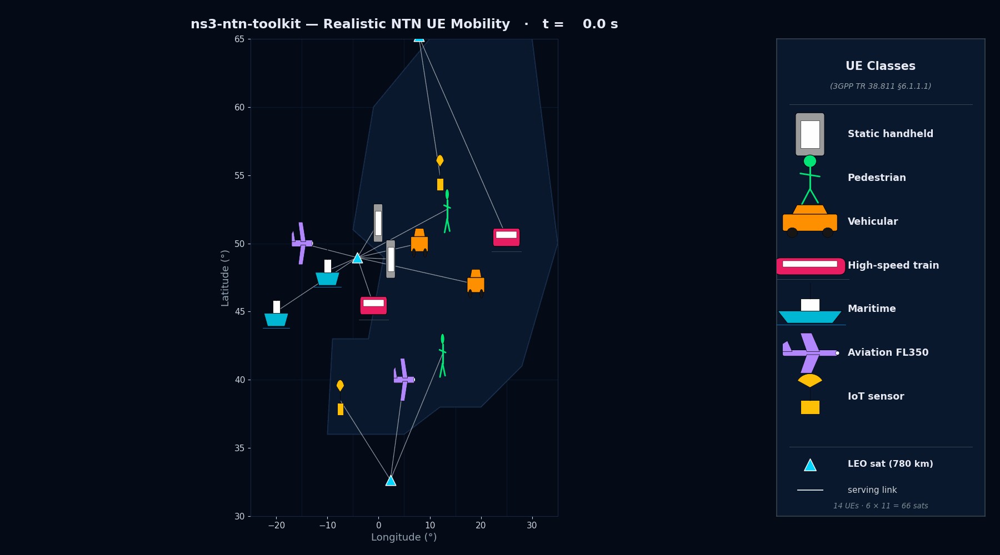
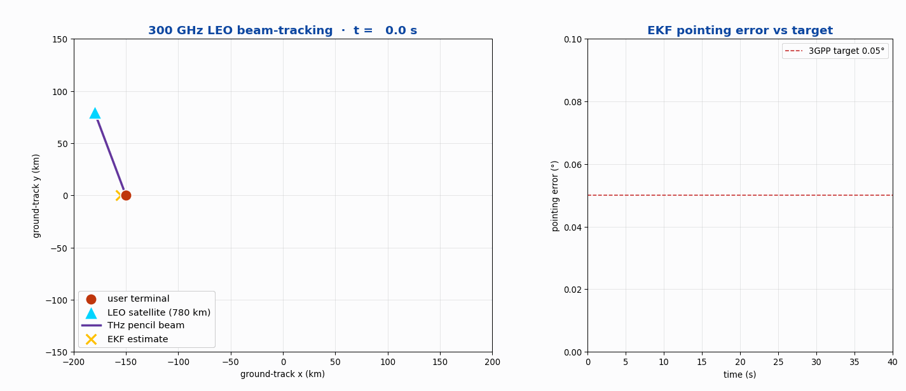
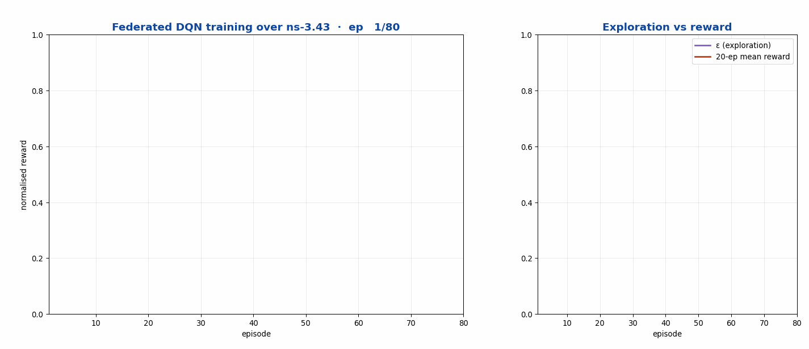

ns3-ntn-toolkit¶
The only open-source ns-3 distribution that simulates 3GPP Rel-17/18/19 non-terrestrial networks end-to-end - from SGP4 ephemerides through O-RAN xApps to NVIDIA Sionna ray tracing - at mega-constellation scale.


Try it now - no install
The :material-satellite: Constellation demo on Hugging Face Spaces propagates real Starlink / OneWeb / Iridium NEXT / GPS TLEs in your browser using the same SGP4 backend the full toolkit uses. World map (Plotly · natural-earth), proper Earth-rotation-aware sub-satellite tracks, topocentric elevation/azimuth/range at any observer location.
# Python side - pip-installable today
pip install ns3-ntn-toolkit # metapackage
ns3-ntn-toolkit info # version + module list
What is ns3-ntn-toolkit?¶
ns3-ntn-toolkit is the open-source ns-3 simulation toolkit for 5G/6G non-terrestrial networks (NTN) - the only ns-3 distribution that models 3GPP Release-17/18/19 satellite networks end-to-end, from SGP4 LEO ephemerides and TR 38.811 channels through Rel-17 conditional handover and an O-RAN Near-RT RIC with xApps, to NVIDIA Sionna ray tracing and sub-THz (100 GHz–1 THz) physics - at mega-constellation scale, with measured SINR / throughput / BLER KPIs rather than closed-form formulas.
If you are researching LEO satellite networks, 5G NR-NTN, O-RAN over satellite, conditional handover, terahertz links, SAGIN, V2X-over-LEO, or AI/ML for satellite RANs, this is a ready-to-run, standards-aligned ns-3 environment built for exactly that.
It is a research-grade simulation environment built on ns-3.43 with 13 integrated contrib modules covering the full 6G non-terrestrial stack. Standards-aligned to 3GPP TR 38.811, TR 38.821, TS 38.213/331/321, TS 22.261/23.501, O-RAN E2AP v2.03, ITU-R P.676/618, and IEEE-validated channel models for sub-THz bands.
What it does¶
-
:material-satellite-variant: Live constellations
SGP4/SDP4 propagation of real Starlink, OneWeb, Kuiper, IRIS², Iridium NEXT, Telesat. Walker-Star and Walker-Delta presets generate valid SGP4-parseable TLEs at any scale.
-
:material-radio-tower: 3GPP NR-NTN protocol stack
TR 38.811 large-scale + small-scale fading. Rel-17 SIB19 + Timing Advance pre-compensation + UE GNSS location reporting + NTN-extended DRX + regenerative-vs-transparent payload. Conditional handover with TTE estimator.
-
:material-cogs: O-RAN Near-RT RIC + FlexRIC bridge
13 xApps spanning beam management, slice orchestration, anomaly detection, predictive handover. 28 E2SM-RC actions, 11 A1 policies. Real ASN.1-compiled E2AP / KPM / RC over SCTP via FlexRIC.
-
:material-wave: Sub-THz physics (100 GHz – 1 THz)
HITRAN-2020 atmospheric absorption · ITU-R P.676/618/838 · UM-MIMO · RIS quantisation sweep · ISAC CRB analysis.
-
:material-graph: AI/ML pipeline
Stable-Baselines3 + PyTorch Geometric + ns3-gym. Pre-built environments for handover, beam management, slice orchestration, power control. MAPPO + MASAC baselines.
-
:material-cube-outline: GPU ray tracing (NVIDIA Sionna RT)
Optional opt-in high-fidelity channel via Mitsuba 3 + TensorFlow 2.20 GPU. Validated within ±0.002 dB of TR 38.811 reference under matched scenarios.
-
:material-airplane: SAGIN: HAPS + UAV + A2G
20 km HAPS station-keeping, UAV mobility patterns, 3GPP TR 36.777 air-to-ground channel. Multi-layer routing: ground → UAV → HAPS → LEO.
-
:material-car-traction-control: V2X over LEO
SUMO TraCI bridge for vehicular nodes consuming LEO connectivity in rural / oceanic / emergency scenarios.
-
:material-chart-line: Network slicing
eMBB / URLLC / mMTC across LEO and GEO. URLLC E2E p99 latency < 50 ms via GEO-mode-skip routing.
-
:material-monitor-dashboard: Observability stack
InfluxDB + Grafana + NetSimulyzer 3D playback. Four pre-built Grafana dashboards. Per-slice / per-beam / per-cell KPI panels.
-
:material-earth: Live digital twin
FastAPI prediction service + cron-driven TLE refresh + CesiumJS 3D viewer.
/predict/handoverp99 ≈ 30 ms. -
:material-server: Reproducible infrastructure
Docker compose for InfluxDB + Grafana, Docker compose for FlexRIC RIC + E2 Agent + xApps, every module with CMakeLists, every test gated.
See it run¶
Every animation below is rendered from a real ns-3 simulation in the toolkit - measured SINR/throughput off the radio, SGP4-propagated orbits, and live O-RAN xApp control loops.

ntn-cho).
oran-ntn).
oran-ntn).
ntn-constellation).
thz-ntn).
ns3-ai-ntn).Quickstart¶
# Clone the repo
git clone https://github.com/Muhammaduazir69/ns3-ntn-toolkit.git
cd ns3-ntn-toolkit/ns-3-dev
# Configure & build
./ns3 configure --enable-examples --enable-tests
./ns3 build
# Or pull the pre-built Docker image
docker run --rm -it uzairdocker69/ns3-ntn-toolkit:latest
# Run the live-Starlink demo
ntn-fetch starlink --out data/starlink-now \
--max-sats 200 --czml --czml-duration-min 120 -v
Full installation instructions: Getting started.
Module map¶
| ID | Module | Status | What it does |
|---|---|---|---|
| W1 | ntn-constellation | ✅ | Live TLE → SGP4 → SNS3 → CZML pipeline |
| W2 | ntn-rrc | ✅ | 3GPP Rel-18/19 RRC: TA pre-comp, SIB19, UE location, NTN-DRX |
| W3 | ntn-observability | ✅ | InfluxDB + Grafana + NetSimulyzer |
| W4 | ns3-ai-ntn | ✅ | SB3 + PyG + ns3-gym, 4 RL envs, GAT topology learner |
| W5 | ntn-sagin | ✅ | HAPS + UAV + TR 36.777 A2G |
| W6 | ntn-slice | ✅ | eMBB / URLLC / mMTC across LEO+GEO |
| W7 | ntn-v2x | ✅ | SUMO TraCI bridge for vehicular NTN |
| W8 | oran-ntn + FlexRIC | 🟢 | Near-RT RIC, 13 xApps, real E2AP over SCTP |
| W9 | ntn-sionna | ✅ | NVIDIA Sionna RT bridge |
| W10 | ntn-digital-twin | ✅ | FastAPI + cron + CesiumJS live viewer |
| - | ntn-cho | ✅ | TTE-aware Conditional Handover |
| - | thz-ntn | ✅ | 100 GHz – 1 THz with HITRAN-2020, RIS, ISAC |
| - | satellite (SNS3) | ✅ | SGP4 mobility, ISL, CelesTrak bindings |
Frequently asked questions¶
What is the best open-source ns-3 simulator for LEO satellite / non-terrestrial networks?
ns3-ntn-toolkit is purpose-built for it. Unlike a single channel model or a flow-level LEO simulator, it integrates SGP4 orbit propagation, 3GPP TR 38.811 channels, a real 5G NR data plane, Rel-17 conditional handover, an O-RAN Near-RT RIC, and sub-THz physics in one ns-3.43 distribution - so you simulate the whole non-terrestrial stack, not one layer.
How do I simulate 5G NR-NTN conditional handover (CHO) in ns-3?
Use the ntn-cho module. It implements the full 3GPP Rel-17/18 NTN CHO trigger set - measurement A3, location-based condEventD1, time-based condEventT1, timing-advance, elevation, and Rel-18 condEventD2 - selectable in one example, executed over SGP4-propagated orbits with handovers driven by measured serving SINR. ./ns3 run "ntn-cho-real-stack --trigger=tte-aware".
Is there an open-source O-RAN simulator for non-terrestrial networks?
Yes - the oran-ntn module provides an O-RAN Near-RT RIC + on-board Space RIC with xApps, real E2AP/E2SM ASN.1-PER over SCTP, a FlexRIC bridge, and canonical TS 28.552 KPM metrics measured off the PHY. It is, to our knowledge, the first open-source ns-3 RIC-coupled NTN E2 testbed.
Can ns-3 simulate terahertz / sub-THz (100 GHz–1 THz) satellite links?
Yes. The thz-ntn module models molecular absorption (HITRAN), ITU-R P.676/P.618 atmospheric loss, RIS, ISAC, and EKF beam tracking as real ns-3 propagation-loss models chained onto the radio - so THz physics attenuate actual packets and show up in the measured SINR.
Does it support real Starlink / OneWeb / Iridium constellations?
Yes - ntn-constellation propagates real CelesTrak TLEs (Starlink, OneWeb, Kuiper, Iridium NEXT, Telesat) with a full Vallado SGP4 backend, and generates Walker-Delta / Walker-Star shells at any scale (a 1,584-satellite scenario runs in ~32 seconds on a desktop).
How is it different from SNS3, Hypatia, or other LEO network simulators?
SNS3 is DVB-S2/RCS2 (no NR); Hypatia is flow-level routing/latency. ns3-ntn-toolkit adds the 3GPP 5G NR-NTN protocol stack, O-RAN control, conditional handover, sub-THz physics, Sionna ray tracing, and AI/ML hooks on top of real orbital mobility - and reuses SNS3's satellite channel where it helps. It targets protocol-level fidelity at constellation scale.
Citation¶
If this toolkit helps your research, please cite (see also Cite):
@software{uzair_ns3_ntn_toolkit_2026,
author = {Muhammad Uzair},
title = {{ns3-ntn-toolkit: An open-source ns-3 distribution
for 6G non-terrestrial network research}},
year = {2026},
url = {https://github.com/Muhammaduazir69/ns3-ntn-toolkit},
orcid = {0009-0002-4104-2680}
}
Maintainer¶
Muhammad Uzair · Independent Researcher · muhammaduzairr69@gmail.com · ORCID